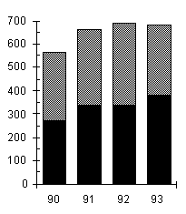
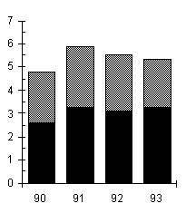
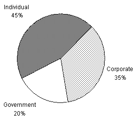

PROFIT AND REVENUE DISTRIBUTION FOR ZIPPY PRINTING, 1990–1993, COPYING AND PRINTING.
Total Profit Total Revenue
(in thousands of dollars) (in millions of dollars)
 
Distribution of Profit from Copying, 1992
(in thousands of dollars)

During the two years in which total profit was most nearly equal, the combined revenue from printing was closest to